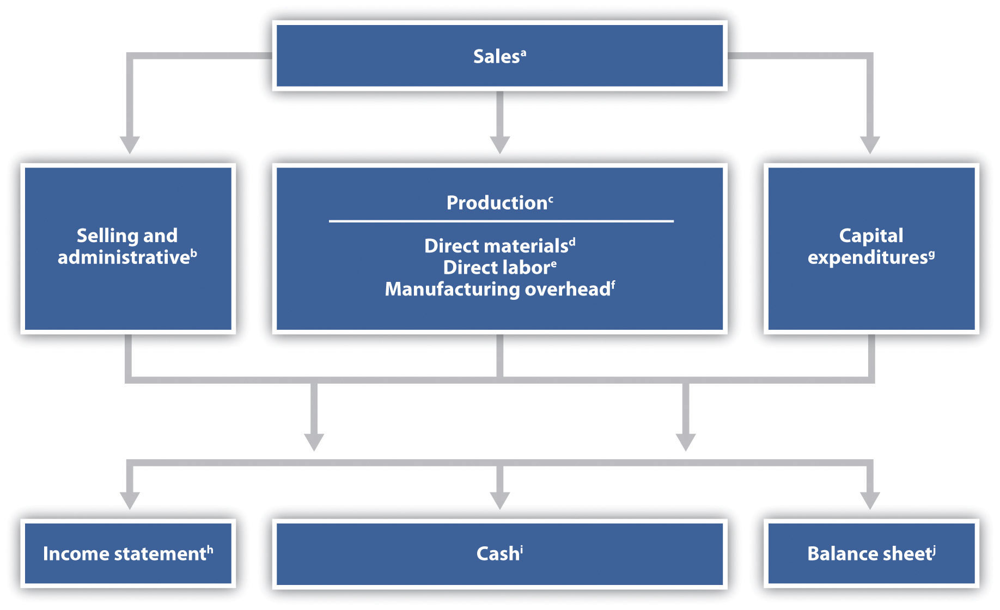
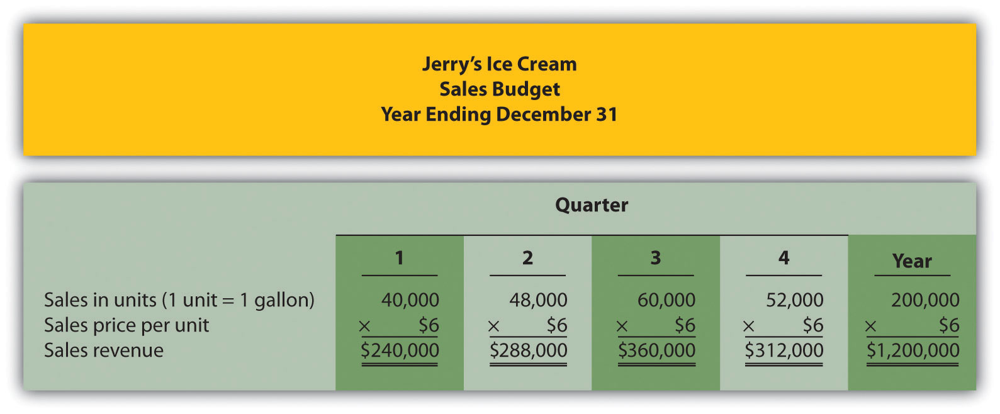
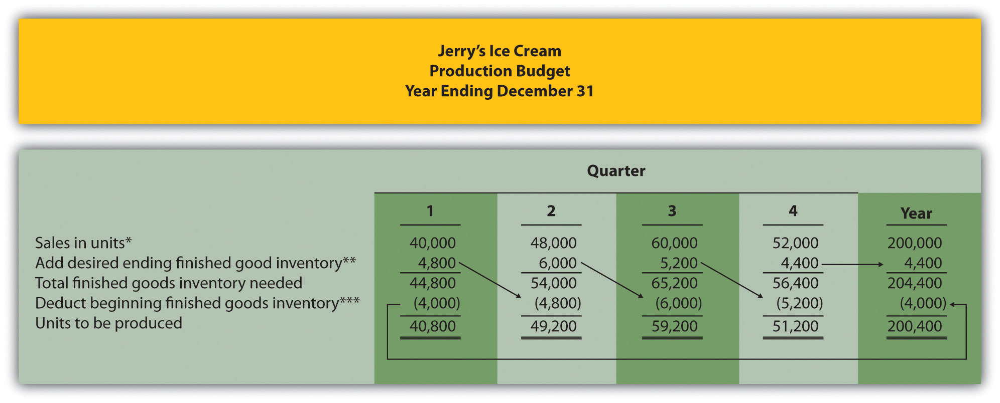
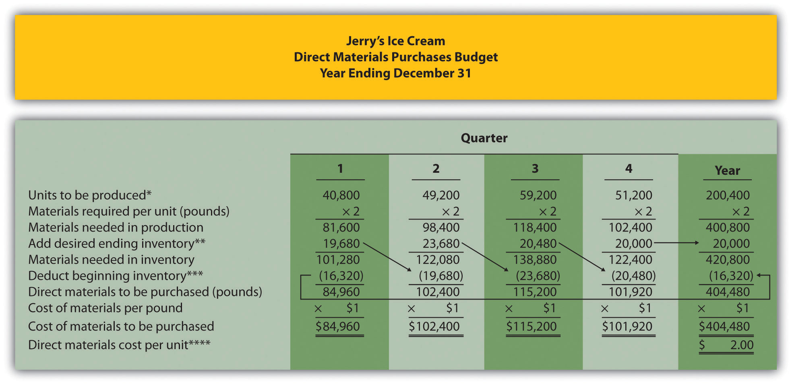
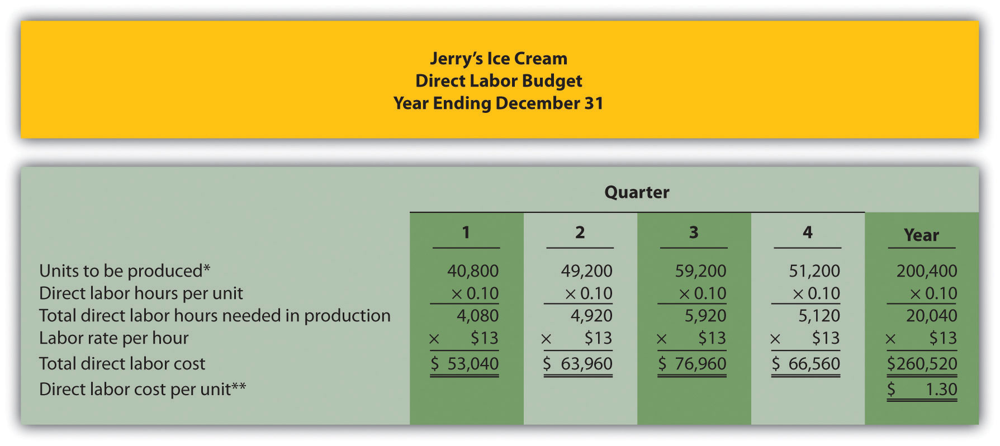
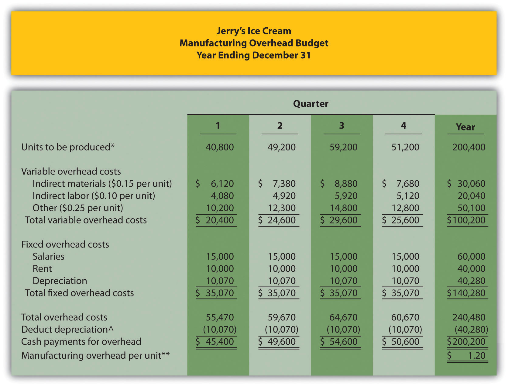
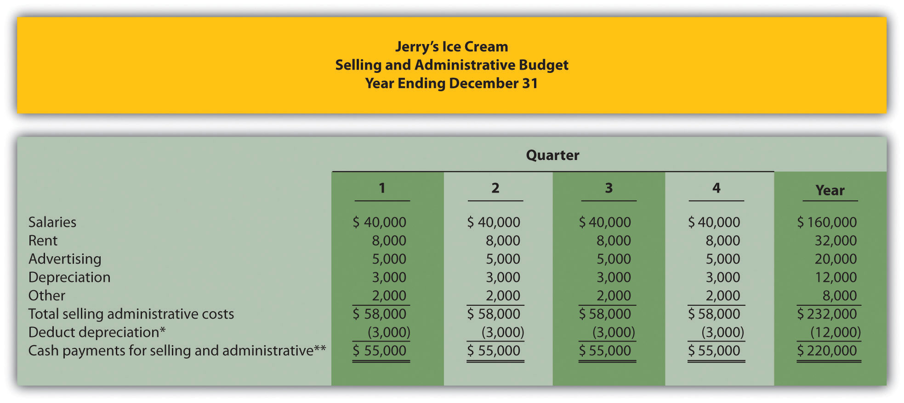
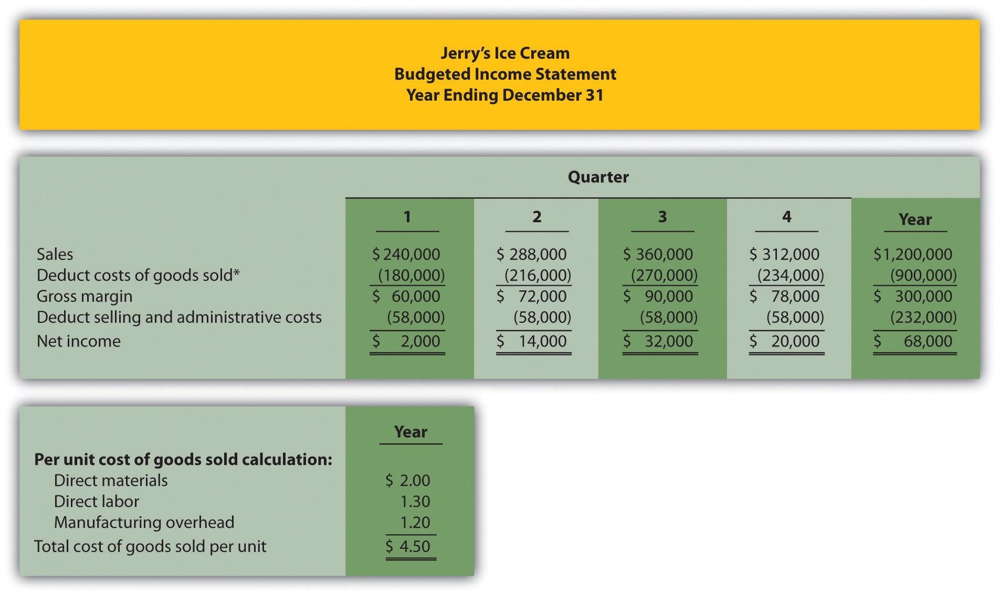
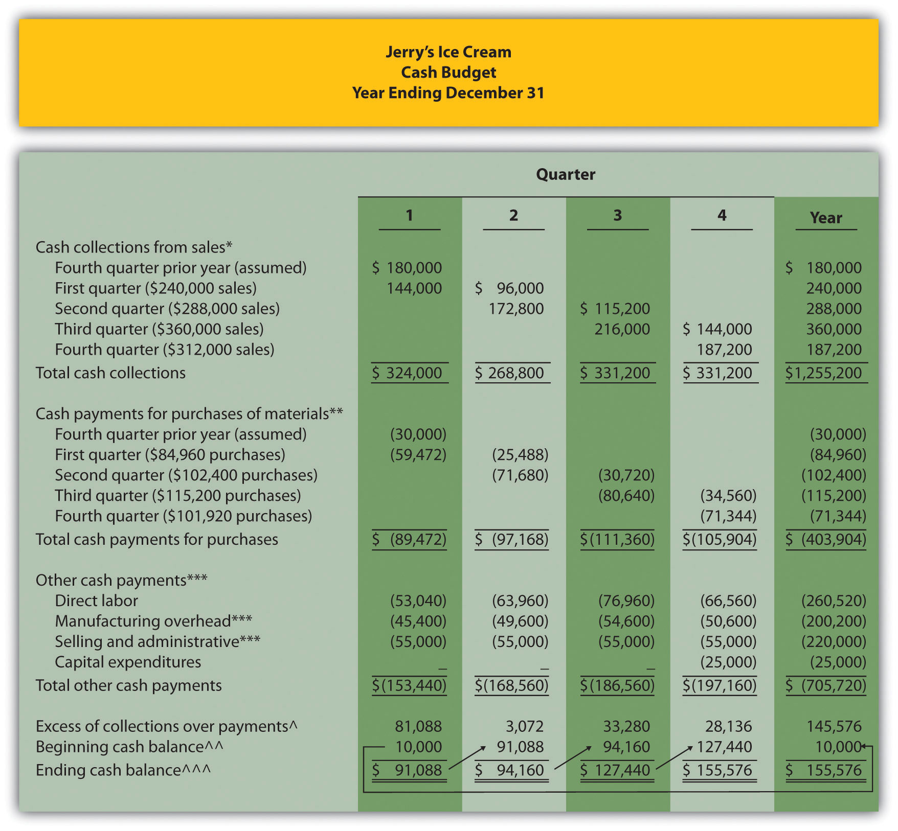
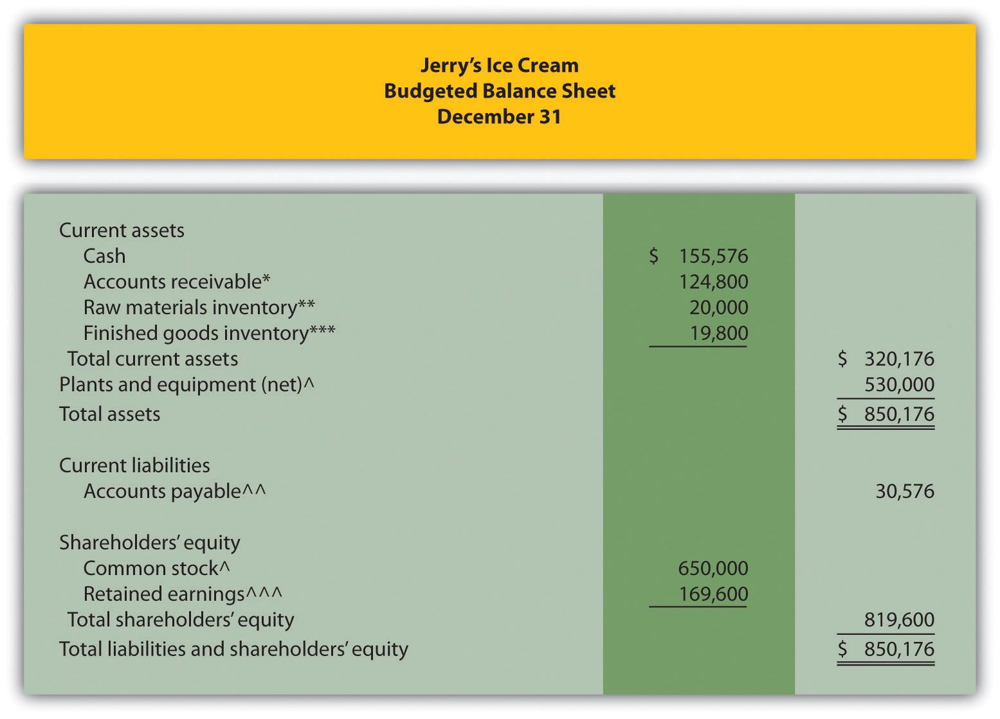

Jerry Feltz is the president and owner of Jerry’s Ice Cream, a producer of high-quality ice cream sold to specialty grocery stores. Jerry is holding a meeting with the company’s managers to discuss plans for this coming year. Managers at the meeting are Tom Benson, the sales manager; Lynn Young, the production manager; and Michelle Hopkins, the treasurer and controller.
| Jerry: | It looks as if we are having another great year. Customers love our ice cream, and sales are up. It’s time to begin the budgeting process for next year. Tom, do you have any thoughts on what our sales will look like for next year? |
| Tom: | I think we will continue to see significant sales growth. But it’s difficult to predict exactly how much growth. On the low end, I would expect about 10 percent; on the high end, perhaps 25 percent. |
| Lynn: | Wow! I knew sales were going well, but I had no idea we were expecting to grow 10 percent to 25 percent next year. It will take some serious planning to produce enough ice cream to handle this growth. |
| Michelle: | I agree. We need to make sure production has enough capacity to handle the growth, and cash flow planning will be critical to ensure we don’t run out of cash in the process of ramping up production. |
| Jerry: | Tom, talk with our salespeople and industry contacts so we can get a solid estimate of quarterly sales for next year. If sales really are expected to grow as you say, we will face a huge challenge! |
| Tom: | I’ll have something for you by the end of next week. |
| Michelle: | I’ll start the budgeting process once we have the sales information from Tom. |
| Lynn: | The sooner we start the budgeting process, the better, particularly if I have to hire more employees and find more production space. |
| Jerry: | Let’s meet in two weeks to discuss the results of Tom’s research and to set up a plan to handle the growth. Thanks for your help! |
Many companies encounter the same issue of growing sales that is facing Jerry’s Ice Cream. Those that plan for growth have a better chance of succeeding than those that sit idle and hope it all works out. Operating budgets are used to (1) plan operations and (2) control operations. We describe both of these objectives next and then devote the remainder of this chapter to the planning phase by creating an operating budget for Jerry’s Ice Cream. We cover the control phase in Chapter 10 "How Do Managers Evaluate Performance Using Cost Variance Analysis?".
Question: If you have established a personal budget, you know the importance of planning to achieve your goals. Assume one of your goals is to purchase a new car. It is not enough to simply state, “I want to buy a new car next year.” If you do not plan ahead for a big expense like this, you may find that you don’t have enough money for a reasonable down payment or that you have very large monthly payments. If you plan ahead, you may see that working some additional hours, cutting back on entertainment, or a combination of both, allows you to buy the car and avoid these problems. Organizations are no different, except their needs tend to be more involved. How do organizations formally plan for the future?
Answer: Let’s look at Jerry’s Ice Cream to answer this question. The company wants to increase sales next year, but will have difficulty doing this without some type of plan, often called a budget. A budgetA plan of the resources needed to achieve the organization’s goals. is a plan of the resources needed to achieve the organization’s goals. An operating budgetA short-term budget (typically one year) that focuses on the daily operations of the organization. is a short-term budget (typically one year) that focuses on the daily operations of the organization. Before presenting the detailed schedules of an operating budget, we first discuss how organizations use budgets to plan and control their activities.
Question: How are budgets used to help organizations plan future activities?
Answer: Budgets are established in advance to help organizations communicate their plans to employees and to help employees coordinate activities across the entire organization. Imagine Jerry’s Ice Cream operating without a budget. If production has no forewarning of an increase in customer demand, Lynn Young, production manager, has no opportunity to plan for an increase in production. Inefficiencies will occur as Lynn struggles to keep pace with demand (e.g., employees working overtime or materials purchased at the last minute at a premium). Cash flow may suffer as spending initially outpaces cash receipts, which would force the company to borrow money quickly at a high interest rate. In the worst case, the company would run out of product, miss out on sales, and perhaps run out of cash.
Turn the example around and assume Jerry’s Ice Cream does have a budget in place for the coming year. The budget communicates the organization’s plans to Lynn, production manager, and Michelle, treasurer and controller, showing that sales are expected to increase. Lynn can then plan accordingly by hiring additional employees, arranging for the purchase of additional materials, and finding more space for production. Michelle can also plan accordingly by arranging for a short-term loan at a reasonable interest rate to meet short-term cash needs. As described here, the planning phase uses the budget to communicate plans to employees and to help employees coordinate activities across the organization.
Question: How do organizations use budgets to control operations?
Answer: Organizations use budgets to evaluate performance. By comparing the budget with actual results, companies can determine whether employees, and the company as a whole, have performed as expected.
For example, assume Jerry’s Ice Cream estimates sales for the first quarter of next year will be 40,000 units at $6 per unit. Actual sales turn out to be 38,000 units at $6.20 per unit. The company can evaluate sales manager Tom Benson’s performance by comparing the budget to actual results. For unit sales, Tom did not perform as well as expected (38,000 units actually sold versus 40,000 in budgeted unit sales). However, Tom exceeded expectations for sales price ($6.20 per unit actual sales price versus budgeted sales price of $6).
The next chapter covers the control phase of budgeting in depth. We now turn to the process of creating an operating budget to plan a company’s operations for the coming year. Creating an operating budget is an essential part of business. Depending on the type of product offered and the size of the company, operating budgets vary widely in complexity. International companies in particular face difficult hurdles when it comes to budgeting, as described in Note 9.4 "Business in Action 9.1".
Challenges of Budgeting for International Operations
Companies with operations in several different countries, called multinational companies, face numerous challenges in establishing operating budgets. Most experts agree that foreign exchange rates have the biggest impact on budgeting for multinationals. Specific exchange rates are used when the budget is established. However, these rates can fluctuate significantly and are likely to differ when companies compare actual results with the initial budget. This makes the budget control process difficult because exchange rate variations might cause the differences between actual results and the budget.
Exchange rate fluctuations, along with other market characteristics—such as economic uncertainty and unpredictable government activities—make budgeting for multinational companies a challenging task.
Source: Ken Milani and Juan Rivera, “The Rigorous Business of Budgeting for International Operations,” Management Accounting Quarterly 5, no. 2 (2004): 38–50.
Why do most organizations prepare an operating budget?
Solution to Review Problem 9.1
Most organizations prepare an operating budget for two reasons. First, budgets help managers communicate plans to employees, which in turn helps employees coordinate activities across the entire organization. Second, budgets are often compared to actual results to evaluate employee and organizational performance.
Question: Some companies prefer to take a “top-down” approach to budgeting, in which upper management establishes the budget with little input from other employees. These budgets are imposed on the organization and do little to motivate employees or to gain acceptance by employees. What method of budgeting is more effective than the top-down approach?
Answer: Successful companies approach budgeting from the bottom up. This requires the involvement of various employees within the organization, not just upper management. Lower-level employees often know more about their functional areas than upper management, and they can be an excellent source of information for budgeting purposes. Although getting input from employees throughout the organization can be time consuming, this approach tends to increase employee motivation and acceptance of the budget.
Most organizations have a budget committee that supervises the budgeting process. A budget committeeA group within the organization responsible for overseeing and approving the master budget. is a group within the organization responsible for overseeing and approving the master budget. A master budgetA series of budget schedules outlining the organization’s plans for the upcoming period. is a series of budget schedules outlining the organization’s plans for the upcoming period (typically for a year and presented in monthly or quarterly time periods). The master budget can take many different forms but often includes schedules that provide planning for sales, production, selling and administrative expenses, and capital expenditures. These schedules lead to the budgeted income statement, cash flows, and balance sheet (also part of the master budget).
Figure 9.1 "Master Budget Schedules" shows the components of the master budget with references to the figure in which we present each component for Jerry’s Ice Cream.
Figure 9.1 Master Budget Schedules

a See Figure 9.3 "Sales Budget for Jerry’s Ice Cream" for the sales budget.
b See Figure 9.8 "Selling and Administrative Budget for Jerry’s Ice Cream" for the selling and administrative budget.
c See Figure 9.4 "Production Budget for Jerry’s Ice Cream" for the production budget.
d See Figure 9.5 "Direct Materials Purchases Budget for Jerry’s Ice Cream" for the direct materials purchases budget.
e See Figure 9.6 "Direct Labor Budget for Jerry’s Ice Cream" for the direct labor budget.
f See Figure 9.7 "Manufacturing Overhead Budget for Jerry’s Ice Cream" for the manufacturing overhead budget.
g See Figure 9.10 "Capital Expenditures Budget for Jerry’s Ice Cream" for the capital expenditures budget.
h See Figure 9.9 "Budgeted Income Statement for Jerry’s Ice Cream" for the budgeted income statement.
i See Figure 9.11 "Cash Budget for Jerry’s Ice Cream" for the cash budget.
j See Figure 9.12 "Budgeted Balance Sheet for Jerry’s Ice Cream" for the budgeted balance sheet.
Solution to Review Problem 9.2
Question: Developing a master budget is a lengthy process. Where do companies start when preparing a master budget?
Answer: Study Figure 9.1 "Master Budget Schedules" carefully, as it serves as the road map for the master budget presented throughout this chapter for Jerry’s Ice Cream. Notice that the budgeting process starts with the sales budget. Also, note that the budgets described next are for a manufacturing company. Manufacturing companies tend to have more budget schedules than other types of organizations because their operations are more complex. Once you understand budgeting in a manufacturing environment, you can easily modify the process to perform budgeting in other organizations, as discussed later in the chapter. As we work through the master budget for Jerry’s Ice Cream, assume the company prepares quarterly budgets.
Question: The sales budget is the starting point for the master budget, as shown in Figure 9.1 "Master Budget Schedules". What is a sales budget, and how is it prepared?
Answer: The sales budgetAn estimate of units of product the organization expects to sell times the expected sales price per unit. is an estimate of units of product the organization expects to sell times the expected sales price per unit. This is perhaps the most important budget as it drives most of the other budgets. For example, the production budget and related materials, labor, and overhead budgets are based on expected sales.
Forecasting sales often involves extensive research and numerous sources. Companies, such as Jerry’s Ice Cream, typically start with their sales staff since salespeople have daily contact with customers and direct information about customer demand. Some companies pay for market trend data to learn about industry and product trends. Many organizations hire market research consultants to obtain and review industry data and ultimately to predict customer demand. Larger companies sometimes employ economists to develop sophisticated models used to project sales. Smaller, less sophisticated organizations simply base their estimates on past trends. Figure 9.2 "Estimating Sales" shows how companies obtain sales information from sales people, market research consultants, and economists.
Tom Benson, sales manager at Jerry’s Ice Cream, talked with his salespeople and reviewed market trends for ice cream using data obtained from a market research firm. His estimate, shown in Figure 9.3 "Sales Budget for Jerry’s Ice Cream", assumes the company will increase sales 15 percent this coming year. Thus, to get projected sales for quarter 1, Tom simply multiplied last year’s first quarter sales by 1.15. The average price per unit last year was $6 (1 unit = 1 gallon), and Tom does not expect any change in this price. The sales budget is presented in Figure 9.3 "Sales Budget for Jerry’s Ice Cream".
Figure 9.3 Sales Budget for Jerry’s Ice Cream
Question: The production budget is developed next and is based on sales budget projections. What is a production budget, and how is it prepared?
Answer: If the organization uses a just-in-time production system, where production occurs just in time to ship the products to the customer, units produced each quarter would be exactly the same as projected sales. However, most companies, including Jerry’s Ice Cream, maintain a certain level of finished goods inventory. Thus production is typically not the same as projected sales. The production budgetAn estimate of units to be produced, and it is based on sales projections plus an estimate of desired ending finished goods inventory less beginning finished goods inventory. is an estimate of units to be produced and is based on sales projections plus an estimate of desired ending finished goods inventory less beginning finished goods inventory, as summarized in the following:
Jerry’s Ice Cream plans to sell 40,000 units in the first quarter, as shown in Figure 9.3 "Sales Budget for Jerry’s Ice Cream". For the sake of simplicity, assume work-in-process inventory is insignificant, and therefore beginning and ending work-in-process inventory is zero. (We assume beginning and ending work-in-process inventory is zero throughout this chapter.) The management prefers to maintain 10 percent of next quarter’s sales in ending inventory. Thus 4,800 units will be in inventory at the end of the first quarter (= 48,000 unit sales in second quarter × 10 percent). Units needed for the first quarter total 44,800 (= 40,000 unit sales + 4,800 units desired ending inventory). However, Jerry’s will not produce 44,800 units because inventory will be left over from the fourth quarter of last year. This beginning inventory will be 4,000 units (= 40,000 unit sales in first quarter × 10 percent). Thus actual production will total 40,800 units:
Figure 9.4 "Production Budget for Jerry’s Ice Cream" presents the production budget for each of the 4 quarters of the coming year. Examine this figure carefully, particularly the last line labeled units to be produced. Lynn Young, the production manager, will be concerned about the spike in production during the third quarter of 59,200 units. The third quarter, from July 1 through September 30, is the peak sales season for ice cream. It will be difficult for Lynn to plan for this increase in production from the first and second quarters to the third quarter. However, this is exactly why companies prepare budgets—to plan for the future!
Figure 9.4 Production Budget for Jerry’s Ice Cream
*Information from Figure 9.3 "Sales Budget for Jerry’s Ice Cream".
**Desired ending inventory = 10 percent × Next quarter sales; for the first quarter, 4,800 = 0.10 × 48,000. Fourth quarter desired ending inventory of 4,400 units is based on an estimate of sales in the first quarter of next year.
***Beginning inventory = Inventory at end of previous quarter; for example, second quarter beginning inventory = First quarter ending inventory.
Once Jerry’s Ice Cream knows how many units it must produce each quarter, budgets are established for the individual components of production: direct materials, direct labor, and manufacturing overhead. We present these budgets next.
Carol’s Cookies produces cookies for resale at grocery stores throughout North America. The company is currently in the process of establishing a master budget on a quarterly basis for this coming fiscal year, which ends December 31. Prior year quarterly sales were as follows (1 unit = 1 batch):
| First quarter | 64,000 units |
| Second quarter | 76,800 units |
| Third quarter | 96,000 units |
| Fourth quarter | 83,200 units |
Unit sales are expected to increase 25 percent, and each unit is expected to sell for $8. The management prefers to maintain ending finished goods inventory equal to 10 percent of next quarter’s sales. Assume finished goods inventory at the end of the fourth quarter budget period is estimated to be 9,000 units.
Solution to Review Problem 9.3
The following is a sales budget:
The following is a production budget:
*Desired ending inventory = 10 percent × Next quarter sales; for the first quarter, 9,600 = 0.10 × 96,000. Fourth quarter desired ending inventory of 9,000 units is given.
**Beginning inventory = Inventory at end of previous quarter; for example, Second quarter beginning inventory = First quarter ending inventory.
Question: The number of units of finished goods to be produced each quarter from the production budget is the starting point for the direct materials purchases budget. What is a direct materials purchases budget, and how is it prepared?
Answer: The direct materials purchases budgetAn estimate of raw materials needed to achieve a desired level of production. is an estimate of raw materials needed to achieve a desired level of production. Figure 9.4 "Production Budget for Jerry’s Ice Cream", the production budget, shows that 40,800 finished units will be produced in the first quarter. We will now establish a direct materials purchases budget that answers the questions: how many pounds of material must be purchased during the first quarter to achieve this production, and what is the cost of these materials?
Assume two pounds of material are required to produce one unit of product. Thus the amount of materials required to produce 40,800 units of ice cream is 81,600 pounds (= 40,800 units × 2 pounds per unit). This amount is labeled as materials needed in production in the direct materials purchases budget shown in Figure 9.5 "Direct Materials Purchases Budget for Jerry’s Ice Cream". (To simplify this example, assume sugar is the only material used. However, other materials, such as cream and vanilla, are typically required to produce ice cream.)
Figure 9.5 Direct Materials Purchases Budget for Jerry’s Ice Cream
*Information from Figure 9.4 "Production Budget for Jerry’s Ice Cream".
**Desired ending inventory = 20 percent × Next quarter production needs; for the first quarter, 19,680 = 0.20 × 98,400. Fourth quarter desired ending inventory of 20,000 pounds is based on an estimate of materials needed in production first quarter of next year.
***Beginning inventory = Inventory at end of previous quarter; for example, Second quarter beginning inventory = First quarter ending inventory.
****$2 direct materials cost per unit = 2 pounds of materials required per unit × $1 per pound.
Will the company buy 81,600 pounds of material in the first quarter? Probably not. Jerry’s will have materials in beginning raw materials inventory and prefers to maintain a certain level of ending raw materials inventory. Thus direct materials purchased is based on materials needed in production plus an estimate of desired ending raw materials inventory less beginning raw materials inventory. We summarize this in the following equation. Notice the similarity of this equation to the inventory equation presented earlier for the production budget.
Assume the management prefers to maintain raw materials ending inventory equal to 20 percent of next quarter’s materials needed in production. Thus 19,680 pounds of material will be in inventory at the end of the first quarter (= 98,400 pounds of materials needed in production in second quarter × 20 percent). Materials needed in inventory total 101,280 pounds (= 81,600 pounds of materials needed in production + 19,680 pounds of material in desired ending inventory). However, Jerry’s will not purchase 101,280 pounds of materials because inventory will be left over from the fourth quarter of last year. This beginning inventory will be 16,320 pounds (= 81,600 pounds of material needed in production in first quarter × 20 percent). Thus direct materials purchased in the first quarter will total 84,960 pounds:
To estimate the cost of purchasing 84,960 pounds of material, multiply the number of pounds to be purchased by the cost per pound. Assume the cost per pound of material for Jerry’s is $1. This results in a cost of $84,960 for materials to be purchased during the first quarter, as shown at the bottom of Figure 9.5 "Direct Materials Purchases Budget for Jerry’s Ice Cream" (= 84,960 pounds to be purchased × $1 per pound).
Review the direct materials purchases budget shown in Figure 9.5 "Direct Materials Purchases Budget for Jerry’s Ice Cream" carefully, particularly the line labeled direct materials to be purchased. The purchasing manager at Jerry’s Ice Cream uses this information, along with the price per pound, to negotiate the purchase of materials with suppliers.
Question: The direct materials purchases budget is the first of three supporting budgets for production. The second is the direct labor budget. What is the direct labor budget, and how is it prepared?
Answer: The direct labor budgetAn estimate of direct labor hours, and related cost, necessary to achieve a desired level of production. is an estimate of direct labor hours, and related costs, necessary to achieve a desired level of production. Knowing Jerry’s Ice Cream plans to produce 40,800 units of ice cream during the first quarter, this budget answers the questions: how many direct labor hours will be necessary to achieve this production, and what will this labor cost?
Assume it takes 0.10 direct labor hours (or 6 minutes) to produce 1 unit of product. Thus 4,080 hours of direct labor will be required to produce 40,800 units of product (= 40,800 finished units produced × 0.10 direct labor hours per unit). Given an average hourly rate of $13, the direct labor cost for the first quarter totals $53,040 (= 4,080 hours × $13 per hour). This information is shown in the direct labor budget presented in Figure 9.6 "Direct Labor Budget for Jerry’s Ice Cream".
Figure 9.6 Direct Labor Budget for Jerry’s Ice Cream
*From Figure 9.4 "Production Budget for Jerry’s Ice Cream".
**$1.30 direct labor cost per unit = 0.10 direct labor hours per unit × $13 per hour.
Carefully review the direct labor budget shown in Figure 9.6 "Direct Labor Budget for Jerry’s Ice Cream". The production manager at Jerry’s Ice Cream, Lynn Young, uses this information to ensure the appropriate number of employees is available to meet production goals. Notice that the number of direct labor hours needed in production for the third quarter is significantly higher than each of the two previous quarters. Again, this is why organizations prepare budgets: to plan for these types of events. Lynn will have to start planning for this spike in direct labor hours, either by asking employees to work overtime or by hiring additional employees.
Question: The manufacturing overhead budget is the third of three supporting production budgets. What is a manufacturing overhead budget, and how is it prepared?
Answer: The manufacturing overhead budgetAn estimate of all production costs, other than direct materials and direct labor, necessary to achieve a desired level of production. is an estimate of all production costs, other than direct materials and direct labor, necessary to achieve a desired level of production. This budget is presented in Figure 9.7 "Manufacturing Overhead Budget for Jerry’s Ice Cream". Notice that overhead costs are separated into variable and fixed components.
Figure 9.7 Manufacturing Overhead Budget for Jerry’s Ice Cream
*From Figure 9.4 "Production Budget for Jerry’s Ice Cream".
**$1.20 = $240,480 total overhead cost ÷ 200,400 units to be produced for the year.
^Deduct depreciation to get the actual cash payment for overhead. This information is needed for the cash budget presented in Figure 9.11 "Cash Budget for Jerry’s Ice Cream".
By definition, total variable overhead costs change with changes in production and are calculated by multiplying units to be produced by the cost per unit. For example, indirect materials cost for the first quarter of $6,120 is calculated by taking 40,800 units to be produced × $0.15 cost per unit. Fixed costs generally do not change with changes in production and therefore remain the same each quarter. (Note: In some situations, fixed overhead costs can change from one quarter to the next. For example, hiring additional salaried personnel during the year would increase fixed overhead costs, and purchasing equipment during the year would increase depreciation costs. In this example, we assume fixed overhead costs do not change during the year.)
Depreciation is deducted at the bottom of the manufacturing overhead budget to determine cash payments for overhead because depreciation is not a cash transaction. We use this information later in the chapter for the cash budget.
Carol’s Cookies, the company featured in the last review problem and in the next three, is now preparing the budget for direct materials purchases, direct labor, and manufacturing overhead.
Direct Materials Purchases Budget Information
Each unit of product requires 1.5 pounds of direct materials per unit, and the cost of direct materials is $2 per pound. Management prefers to maintain ending raw materials inventory equal to 30 percent of next quarter’s materials needed in production. Assume raw materials inventory at the end of the fourth quarter budget period is estimated to be 41,000 pounds.
Direct Labor Budget Information
Each unit of product requires 0.20 direct labor hours at a cost of $12 per hour.
Manufacturing Overhead Budget Information
Variable overhead costs are:
| Indirect materials | $0.20 per unit |
| Indirect labor | $0.15 per unit |
| Other | $0.35 per unit |
Fixed overhead costs each quarter are:
| Salaries | $28,000 |
| Rent | $22,000 |
| Depreciation | $16,165 |
Solution to Review Problem 9.4
*Desired ending inventory = 30 percent × Next quarter production needs; for the first quarter, 44,280 = 0.30 × 147,600 pounds. Fourth quarter desired ending inventory of 41,000 pounds is given.
**Beginning inventory = Inventory at end of previous quarter; for example, Second quarter beginning inventory = First quarter ending inventory.
***$3 direct materials cost per unit = 1.5 pounds of materials required per unit × $2 per pound.
*$2.40 direct labor cost per unit = 0.20 direct labor hours per unit × $12 per hour.
*$1.36 = $545,360 total overhead cost ÷ 401,000 units to be produced for the year.
^Deduct depreciation to get the actual cash payment for overhead. This information is needed for the cash budget prepared later.
Question: Now that the sales and production-related budgets are complete, it is time to estimate selling and administrative costs. What is a selling and administrative budget, and how is it prepared?
Answer: The selling and administrative budgetAn estimate of all operating costs other than production. is an estimate of all operating costs other than production. This budget is presented in Figure 9.8 "Selling and Administrative Budget for Jerry’s Ice Cream".
Although many organizations may have variable and fixed costs in this budget, Jerry’s Ice Cream treats all selling and administrative costs as fixed costs. Once again, depreciation is deducted at the bottom of this budget to determine cash payments for selling and administrative costs, which we use later in the chapter for the cash budget.
Figure 9.8 Selling and Administrative Budget for Jerry’s Ice Cream
*Deduct depreciation to get the actual cash payment for selling and administrative costs.
**This information is needed for the cash budget presented in Figure 9.11 "Cash Budget for Jerry’s Ice Cream".
Question: Budgets completed to this point include sales (Figure 9.3 "Sales Budget for Jerry’s Ice Cream"), production (Figure 9.4 "Production Budget for Jerry’s Ice Cream"), direct materials (Figure 9.5 "Direct Materials Purchases Budget for Jerry’s Ice Cream"), direct labor (Figure 9.6 "Direct Labor Budget for Jerry’s Ice Cream"), manufacturing overhead (Figure 9.7 "Manufacturing Overhead Budget for Jerry’s Ice Cream"), and selling and administrative (Figure 9.8 "Selling and Administrative Budget for Jerry’s Ice Cream"). Jerry’s Ice Cream now has enough information to prepare the budgeted income statement. What is a budgeted income statement, and how is it prepared?
Answer: The budgeted income statementAn estimate of the organization’s profit for a given budget period. is an estimate of the organization’s profit for a given budget period. Most organizations, including Jerry’s Ice Cream, prepare the budgeted income statement using the accrual basis of accounting: revenues are recorded when earned and expenses are recorded when incurred. The budgeted income statement for Jerry’s Ice Cream is presented in Figure 9.9 "Budgeted Income Statement for Jerry’s Ice Cream". The cash budget we prepare later in the chapter will show when cash is received and paid.
Figure 9.9 Budgeted Income Statement for Jerry’s Ice Cream
*Cost of goods sold = Per unit cost of $4.50 (see above) × Units sold (from Figure 9.3 "Sales Budget for Jerry’s Ice Cream"); for the first quarter, $180,000 cost of goods sold = $4.50 unit cost × 40,000 units.
The first line in the budgeted income statement, sales, comes from the sales budget in Figure 9.3 "Sales Budget for Jerry’s Ice Cream". The next line, cost of goods sold, is calculated by multiplying unit sales from Figure 9.3 "Sales Budget for Jerry’s Ice Cream" by the cost per unit. The cost per unit calculation is shown at the bottom of Figure 9.9 "Budgeted Income Statement for Jerry’s Ice Cream". Carefully review this calculation. Since Jerry’s Ice Cream uses full-absorption costing, all manufacturing costs related to goods sold are included (or fully absorbed) in cost of goods sold. Figure 9.5 "Direct Materials Purchases Budget for Jerry’s Ice Cream", Figure 9.6 "Direct Labor Budget for Jerry’s Ice Cream", and Figure 9.7 "Manufacturing Overhead Budget for Jerry’s Ice Cream" provide this information on a per unit basis for direct materials, direct labor, and manufacturing overhead, respectively.
The third line, gross margin, is simply sales minus cost of goods sold. The fourth line, selling and administrative costs, comes from the selling and administrative budget in Figure 9.8 "Selling and Administrative Budget for Jerry’s Ice Cream". The bottom line of the budgeted income statement, net income, is gross margin minus selling and administrative costs. Income tax expense is not included in this example for the sake of simplicity. However, income taxes can significantly reduce projected net income and cash flows.
Question: How do companies use the budgeted income statement to improve operations?
Answer: The budgeted income statement is perhaps the most carefully scrutinized component of the master budget. The management and employees throughout the organization use this information for planning purposes and to evaluate company performance. The board of directors and budget committee are responsible for approving the budget and often review periodic reports comparing actual net income to budgeted net income to determine if profit goals are being achieved. Lenders and owners often review the budget to ensure the organization is on track to meet its goals. The budgeted income statement answers the question: what profits does the organization expect to achieve?
After completing the budgeted income statement, only three budgets remain: the capital expenditures budget, the cash budget, and the budgeted balance sheet. We discuss the capital expenditures budget next.
Carol’s Cookies estimates that all selling and administrative costs are fixed. Quarterly selling and administrative cost estimates for the coming year are
| Salaries | $60,000 |
| Rent | $ 7,000 |
| Advertising | $10,000 |
| Depreciation | $ 8,000 |
| Other | $ 1,000 |
Solution to Review Problem 9.5
*Deduct depreciation to get the actual cash payment for selling and administrative costs.
**This information is needed for the cash budget prepared later.
*Cost of goods sold = Per unit cost of $6.76 (see above) × Units sold (from sales budget); for first quarter, $540,800 cost of goods sold = $6.76 unit cost × 80,000 units.
**From selling and administrative budget.
Question: What is a capital expenditures budget, and how is it prepared?
Answer: The capital expenditures budgetAn estimate of the long-term assets to be purchased during the budget period. is an estimate of the long-term assets to be purchased during the budget period. This includes purchases of tangible long-term assets such as property, plant, and equipment, and intangible assets, such as patents, copyrights, and trademarks. This budget can have a significant impact on cash flow and requires careful planning and analysis (Chapter 8 "How Is Capital Budgeting Used to Make Decisions?" presents a detailed discussion of capital budgeting). As shown in Figure 9.10 "Capital Expenditures Budget for Jerry’s Ice Cream", Jerry’s Ice Cream plans to purchase computers and production equipment at the end of the fourth quarter.
Figure 9.10 Capital Expenditures Budget for Jerry’s Ice Cream
Note: These acquisitions will have no effect on depreciation expense in the fourth quarter. Items will be purchased at the end of the year. Thus depreciation begins the following year.
Because long-term asset purchases occur at the end of the year, depreciation will begin the following year. Thus depreciation shown in the manufacturing overhead and selling and administrative budgets will not be affected until the following year. The cash outlay required to make these purchases is reflected in the cash budget presented next.
Question: What is a cash budget, and how is it prepared?
Answer: The cash budgetAn estimate of the amount and timing of cash inflows and outflows for the budget period. is an estimate of the amount and timing of cash inflows and outflows for the budget period. Although the budgeted income statement provides an estimate of profitability, it stops short of providing cash flow information. For example, some of the $240,000 in first quarter sales revenue will be collected during the first quarter and some will be collected the following quarter. A section of the cash budget will show when cash from sales will be received.
The cash budget has the following sections, each of which is described after Figure 9.11 "Cash Budget for Jerry’s Ice Cream":
Figure 9.11 "Cash Budget for Jerry’s Ice Cream" shows the cash budget for Jerry’s Ice Cream. Amounts shown in parentheses represent cash outflows; amounts without parentheses represent cash inflows.
Figure 9.11 Cash Budget for Jerry’s Ice Cream
*Based on sales budget shown in Figure 9.3 "Sales Budget for Jerry’s Ice Cream". All sales are on credit: 60 percent collected in the quarter of sale and 40 percent collected the following quarter.
**Based on purchases budget shown in Figure 9.5 "Direct Materials Purchases Budget for Jerry’s Ice Cream". All purchases are on credit: 70 percent paid in the quarter of purchase and 30 percent paid the following quarter.
***Does not include depreciation since depreciation expense does not involve a cash payment. See related figures for calculations.
^Excess of collections over payments = Cash collections from sales – Cash payments for materials purchases – Other cash payments.
^^ Beginning cash balance = Cash balance at end of previous period. Balance for first quarter is given.
^^^ Ending cash balance = Excess of collections over payments for the quarter + Beginning cash balance.
Question: Assume all sales at Jerry’s Ice Cream are on credit. How long does it take, on average, for Jerry’s to collect on credit sales?
Answer: On average, 60 percent of credit sales are collected in the quarter sold and the remaining 40 percent is collected the following quarter. These percentage estimates are based on previous experience and take into consideration credit terms offered to customers. Since Jerry’s Ice Cream only sells to customers with an excellent credit record, it anticipates no bad debts.
As you examine the cash collections from sales section of Jerry’s cash budget, notice that $180,000 in cash will be collected in the first quarter related to credit sales made in the previous quarter (this amount is given). Next, you will see $144,000 in cash collected in the first quarter related to first quarter sales (= 60 percent collected in quarter of sale × $240,000 first quarter sales). The remaining $96,000 will be collected in the second quarter, as shown in Figure 9.11 "Cash Budget for Jerry’s Ice Cream" (= 40 percent × $240,000 first quarter sales).
Question: Assume all purchases at Jerry’s Ice Cream are on credit. How long does it take, on average, for Jerry’s to pay for these credit purchases?
Answer: On average, 70 percent of purchases are paid in the quarter purchased and the remaining 30 percent is paid the following quarter. These percentage estimates are based on previous experience and take into account credit terms offered by suppliers.
As you look at the cash payments for purchases of materials section of Jerry’s cash budget, notice that $30,000 in cash will be paid in the first quarter related to purchases made in the previous quarter (this amount is given). Next, you will see $59,472 in cash paid in the first quarter related to first quarter purchases (= 70 percent paid in quarter purchased × $84,960 first quarter purchases). The remaining $25,488 will be paid in the second quarter, as shown in Figure 9.11 "Cash Budget for Jerry’s Ice Cream" (= 30 percent × $84,960 first quarter purchases). Figure 9.5 "Direct Materials Purchases Budget for Jerry’s Ice Cream" shows how cash flows into the company for customer sales and out of the company for purchases of materials.
Question: What other cash collections and cash payments must be considered at Jerry’s Ice Cream?
Answer: Assume Jerry’s Ice Cream has other cash payments but no other cash collections. Direct labor cash payments are from Figure 9.6 "Direct Labor Budget for Jerry’s Ice Cream". Manufacturing overhead cash payments are from Figure 9.7 "Manufacturing Overhead Budget for Jerry’s Ice Cream". Recall that depreciation was subtracted from total overhead costs in Figure 9.7 "Manufacturing Overhead Budget for Jerry’s Ice Cream" to calculate the cash payments for overhead. Selling and administrative cash payments are from Figure 9.8 "Selling and Administrative Budget for Jerry’s Ice Cream", where a similar depreciation adjustment was made. Capital expenditure cash payments are from Figure 9.10 "Capital Expenditures Budget for Jerry’s Ice Cream".
The other cash collections and payments section is also where organizations include financing activities such as cash collections from the sale of bonds or cash payments for the repayment of bank loans. Jerry’s Ice Cream does not have any of these financing activities.
The bottom section of the cash budget is where the ending cash balance is calculated for each budget period. The manager responsible for cash planning, typically the treasurer, scrutinizes this section carefully. Some organizations must borrow cash to fund the timing difference between when cash is used for production and when cash is received from sales. The cash budget will signal when short-term borrowing is necessary and allows time for the treasurer to arrange for financing. The cash budget presented in Figure 9.11 "Cash Budget for Jerry’s Ice Cream" shows that Jerry’s will not need to borrow cash in any of the four quarters. In fact, Jerry’s Ice Cream will have a hefty reserve of cash totaling $155,576 at the end of the fourth quarter.
Carol’s Cookies has the following information pertaining to the capital expenditures and cash budgets.
Capital Expenditures
The company plans to purchase selling and administrative equipment totaling $20,000 and production equipment totaling $28,000. Both will be purchased at the end of the fourth quarter and will not affect depreciation expense for the coming year.
Cash Budget
All sales are on credit. The company expects to collect 70 percent of sales in the quarter of sale, 25 percent of sales in the quarter following the sale, and 5 percent will not be collected (bad debt). Accounts receivable at the end of last year totaled $200,000, all of which will be collected in the first quarter of this coming year.
All direct materials purchases are on credit. The company expects to pay 80 percent of purchases in the quarter of purchase and 20 percent the following quarter. Accounts payable at the end of last year totaled $50,000, all of which will be paid in the first quarter of this coming year.
The cash balance at the end of last year totaled $20,000.
Solution to Review Problem 9.6
Note: These acquisitions will have no effect on depreciation expense in the fourth quarter. Items will be purchased at the end of the year. Thus depreciation begins the following year.
*Based on sales budget. All sales are on credit: 70 percent collected in the quarter of sale, 25 percent collected the following quarter, and 5 percent bad debt.
**Based on purchases budget. All purchases are on credit: 80 percent paid in the quarter of purchase and 20 percent paid the following quarter.
***From manufacturing overhead budget. Amount does not include depreciation.
****From selling and administrative budget. Amount does not include depreciation.
*****From capital expenditures budget.
^Excess of collections over payments = Cash collections from sales – Cash payments for materials purchases – other cash payments.
^^ Beginning cash balance = Cash balance at end of previous period. Balance for first quarter is given.
^^^ Ending cash balance = Excess of collections over payments for the quarter + Beginning cash balance.
Question: The budgeted balance sheet is the last piece of the budget process. What is the budgeted balance sheet, and how is it prepared?
Answer: The budgeted balance sheetAn estimate of the ending balances for all balance sheet accounts. is an estimate of the ending balances for all balance sheet accounts. Managers use this to assess the impact that budgeted sales and costs will have on the financial condition of the organization. We present the budgeted balance sheet for Jerry’s Ice Cream in Figure 9.12 "Budgeted Balance Sheet for Jerry’s Ice Cream".
Information needed to prepare the budgeted balance sheet for Jerry’s Ice Cream is shown throughout the chapter and is referenced in Figure 9.12 "Budgeted Balance Sheet for Jerry’s Ice Cream". Additional information is provided here:
Figure 9.12 Budgeted Balance Sheet for Jerry’s Ice Cream
*$124,800 = $312,000 in fourth quarter sales (Figure 9.3 "Sales Budget for Jerry’s Ice Cream") × 40 percent to be collected next quarter (Figure 9.11 "Cash Budget for Jerry’s Ice Cream").
**$20,000 = 20,000 pounds (Figure 9.5 "Direct Materials Purchases Budget for Jerry’s Ice Cream") × $1 per pound (Figure 9.5 "Direct Materials Purchases Budget for Jerry’s Ice Cream").
***$19,800 = 4,400 units (Figure 9.4 "Production Budget for Jerry’s Ice Cream") × $4.50 (Figure 9.9 "Budgeted Income Statement for Jerry’s Ice Cream").
^Given.
^^ $30,576 = $101,920 in fourth quarter purchases (Figure 9.5 "Direct Materials Purchases Budget for Jerry’s Ice Cream") × 30 percent to be paid next quarter (Figure 9.11 "Cash Budget for Jerry’s Ice Cream").
^^^$169,600 = $101,600 in retained earnings at end of last year (given) + $68,000 budgeted net income for the year (Figure 9.9 "Budgeted Income Statement for Jerry’s Ice Cream").
Using Excel to Develop an Operating Budget
Managers often use spreadsheets to develop operating budgets. Spreadsheets help managers perform what-if analysis by linking the components of the master budget and automatically making changes to budget schedules when certain estimates are revised. For example, if managers at Jerry’s Ice Cream wanted to see what would happen if sales in units were decreased by 10 percent from the initial projection shown in Figure 9.3 "Sales Budget for Jerry’s Ice Cream", they would simply reduce sales by 10 percent, and all budget schedules affected by this change would automatically be updated in the spreadsheet.
An example of how to use Excel to develop an operating budget for Jerry’s Ice Cream follows. Notice the tabs at the bottom of the spreadsheet. The first tab is for the sales budget worksheet, the second tab is for the production budget worksheet, the next tab is for the direct materials purchases budget worksheet, and so on. All these worksheets are linked so changes to certain estimates are reflected in the appropriate budget schedules.
Spreadsheet programs are not the only way managers use technology to facilitate the budgeting process. As indicated in Note 9.30 "Business in Action 9.2" the Web is also a useful tool when it comes to efficient budgeting.
Moving from Spreadsheets to Intranet Budgeting
The Pacific Northwest National Laboratory (PNNL) is one of nine multiprogram national laboratories of the U.S. Department of Energy. PNNL is operated by Battelle Science and Technology International, a global science and technology enterprise that conducts $3,000,000,000 worth of research and development annually.
The Facilities & Operations (F&O) Business Office at PNNL has over 130 budget activities, each of which requires an annual budget. The total annual budget is $70,000,000. Prior to 2000, activity managers were required to use Excel to process budget information. The F&O Business Office then uploaded this information to formulate the division’s budget.
As the F&O Business Office began the budget process for 2001, management decided to build a Web-based, or intranet, budget and planning system. The new system allowed managers to use the Web to input budget information directly, thus eliminating the need to upload initial budgets and subsequent budget changes.
Moving to intranet budgeting benefited PNNL’s F&O Business Office in several ways. Activity managers no longer had to use Excel to enter budget information, which saved 450 hours. The F&O Business Office saved 60 hours by no longer having to upload Excel budget information. Budget reports are easy to create, and the system provides real-time reports for analysis and project management.
Many organizations are adopting intranet budgeting as the primary source of planning and control. As the financial specialist at PNNL stated, intranet budgeting provides “a tool that is easy to use, accurate, and simple and will continue to save us time and money.”
Sources: Mary F. Astley, “Intranet Budgeting,” Strategic Finance, May 2003; Pacific Northwest National Laboratory, “Home Page,” http://www.pnl.gov.
Assume Carol’s Cookies will collect 25 percent of fourth quarter budgeted sales in full next year (this represents accounts receivable at the end of the fourth quarter). The following account balances are expected at the end of the fourth quarter:
Retained earnings at the end of last year totaled $56,180, and no cash dividends are anticipated for the budget period ending December 31.
Prepare a budgeted balance sheet for Carol’s Cookies using the format shown in Figure 9.12 "Budgeted Balance Sheet for Jerry’s Ice Cream".
Solution to Review Problem 9.7
*$208,000 = $832,000 in fourth quarter sales (from sales budget) × 25 percent to be collected next quarter (given).
**$82,000 = 41,000 pounds × $2 per pound (from direct materials budget).
***$60,840 = 9,000 units (from production budget) × $6.76 cost per unit (from budgeted income statement).
^Given.
^^ $59,492 = $297,460 in fourth quarter purchases (from direct materials budget) × 20 percent to be paid next quarter (given).
^^^ $208,180 = $56,180 in retained earnings end of last year (given) + $152,000 budgeted net income (from budgeted income statement).
The management group at Jerry’s Ice Cream is reconvening to discuss sales growth anticipated for the next budget period.
| Jerry: | Tom, I recall you saying we should expect growth between 10 percent and 25 percent next year. Have you been able to narrow this down a bit? |
| Tom: | Yes, I’ve talked with our salespeople and industry contacts. We also obtained trend data from a market research firm. Based on this information, sales should increase about 15 percent this coming year. Most agree this growth is a result of our high-quality product and our ability to quickly adjust flavors to accommodate consumer tastes. |
| Jerry: | This is great news. It looks like our ice cream is really catching on! |
| Michelle: | I received Tom’s projection a few days ago and already have a preliminary budget for next year. Lynn, you will have to do some serious planning to guarantee we have enough materials and employees for the third quarter spike in sales. |
| Lynn: | Yes, I realize we have some work to do to ensure we have enough resources to meet budgeted production levels. |
| Jerry: | Can’t we just hire a few more employees and let our suppliers know we will need more materials? |
| Lynn: | The problem is that we have a spike in production during the third quarter. Production goes from 49,200 units in the second quarter to 59,200 units in the third quarter and back down to 51,200 units in the fourth quarter. I don’t think materials will be an issue—our supplier has already assured me this will not be a problem. But I can’t just hire new employees in the third quarter and fire them in the fourth quarter. |
| Jerry: | Perhaps our existing employees can work overtime, or we can hire temporary employees. |
| Lynn: | Hiring temporary employees would be my preference, particularly since college students are looking for part-time work during the summer months. Working overtime would really cause problems with our budgeted hourly rate of $13. |
| Jerry: | Michelle, do we have any cash flow problems with the anticipated growth? |
| Michelle: | Fortunately not. If all goes as planned, we should have more than $90,000 in the bank at the end of each quarter. |
| Jerry: | Excellent! Let’s do our best to stay on track. Michelle, I’d like an update at the end of the first quarter to see if actual profit meets or exceeds budgeted profit. |
| Michelle: | No problem. I’ll have it for you as soon as the books are closed for the first quarter. |
| Jerry: | Now that we all have some idea of what to expect this coming year, we can make sure the resources are in place to make it happen. This should be an exciting and challenging year for us. Let’s meet again next month to discuss our progress in preparing for next year. |
This narrative provides an example of how the master budget is used for planning purposes. It is much more efficient to plan in advance for significant increases in sales and production than to wait and deal with production issues as they occur. The master budget can also be used for control purposes by evaluating company performance. We discuss the control phase of budgeting further in Chapter 10 "How Do Managers Evaluate Performance Using Cost Variance Analysis?".
The examples used thus far to describe a master budget have been limited to manufacturing companies. Manufacturing companies tend to have comprehensive operating budgets and therefore serve as a good starting point in learning how to develop a master budget. However, all types of organizations use operating budgets.
Question: What do operating budgets look like for merchandising organizations?
Answer: Merchandising organizations typically purchase finished goods and sell them to retail or wholesale customers. Because merchandisers do not produce goods, they do not use production or production-related budgets.
Figure 9.13 "Master Budget Schedules for a Merchandising Organization" provides an overview of the master budget schedules for a merchandising organization. If you compare this diagram with Figure 9.1 "Master Budget Schedules" (master budget schedules for a manufacturing company), you will notice that production and production-related budgets are not applicable to merchandising organizations. Direct materials are not needed, and all labor and overhead costs are included in the selling and administrative budget.
Figure 9.13 Master Budget Schedules for a Merchandising Organization

The most important aspect of budgeting for merchandising organizations is the merchandise purchases budget. The merchandise purchases budgetAn estimate of the units of merchandise to be purchased and the cost per unit. estimates the units of merchandise to be purchased and the cost per unit. Much like the production budget for a manufacturing company, the merchandise purchases budget estimates units to be purchased (instead of units to be produced) and is based on sales projections, as well as an estimate of desired ending merchandise inventory less beginning merchandise inventory.
Question: What do operating budgets look like for service organizations?
Answer: Service organizations, such as architectural and accounting firms, provide services rather than tangible goods. These organizations do not have raw materials, finished goods, or merchandise inventories, and therefore they do not have production or merchandise purchases budgets. Instead, the focus is on projected sales revenue from services provided and the labor necessary to achieve sales revenue projections. Service organizations must constantly estimate services to be provided and make sure labor force resources are available to meet customer demand.
Question: Not-for-profit organizations, such as school districts and charitable organizations, also use budgets for planning and control purposes. The budgeting process in most not-for-profit organizations is critical because the approved budget often serves as the legal authority for expenditures. What do operating budgets look like for not-for-profit organizations?
Answer: Because not-for-profit organizations are very diverse in nature—for example, some provide a service, while others collect money to help victims of natural disasters or to promote medical research—it is difficult to generalize about which master budget components apply and which do not. However, with an understanding of the budget components used by manufacturing, merchandising, and service organizations, one can establish a budgeting process for virtually any not-for-profit organization. For an example of how one not-for-profit organization goes about the budgeting process, read Note 9.35 "Business in Action 9.3".
Budgeting at a Not-for-Profit Organization
Yearly, a small not-for-profit symphony in California establishes an operating budget with revenues totaling $200,000. The symphony’s treasurer oversees the budget committee, which is made up of three board members. The budget committee is responsible for creating, approving, and monitoring the budget.
The budget committee begins the budgeting process by reviewing information from the year before. All board members and office staff are given spreadsheets showing last year’s results and are asked to provide input for the next budget period. For example, the committee responsible for ticket sales estimates sales revenue based on expected ticket sales times the average sales price. Anticipated increases in sales price are considered in the sales budget.
Expenses are also budgeted based on last year’s actual results. Those requesting increases in budgeted expenditures must justify them. Once revenues and expenses are established for the next budget period, the bookkeeper enters the information using QuickBooks software and prints a preliminary budget report, which the budget committee reviews. Once the budget committee has balanced the budget, reviewed it for reasonableness, and approved it, it goes to the board of directors for approval.
The control phase of the budgeting process requires that all expenditures be in accordance with the budget. Any expenditure exceeding the budget by more than $25 must be approved by the board of directors. A financial report comparing actual revenues and expenditures with budgeted revenues and expenditures (produced using QuickBooks software) is submitted to the board of directors monthly.
Patel and Company performs accounting services for its customers. The company had the following net income for the most recent year:

The following information was gathered to help prepare next year’s budgeted income statement:
Prepare a quarterly budgeted income statement for Patel and Company; include a column summarizing the year.
Solution to Review Problem 9.8

*First quarter budget of $148,500 = $135,000 in last year’s first quarter revenue × (1 + .10).
**Quarterly budget of $63,000 = $60,000 in last year’s quarterly salaries × (1 + .05).
***First quarter budget of $26,250 = $25,000 in last year’s first quarter salaries × (1 + .05). Second, third, and fourth quarter budgets include newly hired staff at $12,000 a quarter.
^Quarterly budget of $11,000 = $10,000 in last year’s quarterly budget × (1 + .10).
^^ No change from last year.
^^^ Quarterly budget of $2,100 = $2,000 in last year’s quarterly budget × (1 + .05).
@ Quarterly budget of $17,500 = $14,000 in last year’s quarterly budget × (1 + .25).
@@ Quarterly budget of $5,850 = $6,500 in last year’s quarterly budget × (1 – .10).
Question: Although bottom-up budgeting, in which management elicits input from employees throughout the company, is effective in actively engaging those who have to achieve the budgeted goals, this type of budgeting is not free from problems. Ethical issues often arise in the budgeting process, particularly when employees and managers are evaluated by comparing their actual results to the budget. How might ethical issues arise in the budgeting process?
Answer: To demonstrate how ethical dilemmas might arise, assume you are a manager and you help upper management establish the master budget (this is the planning phase). Furthermore, you are evaluated based on achieving budgeted profit on a quarterly basis (this is the control phase). In fact, you will receive a $10,000 quarterly bonus, in addition to your base salary, if you meet or exceed budgeted profit. There is an inherent conflict between the planning and control phases of this process. You are helping the company plan, but you also want to be sure budgeted profit is as low as possible so you can get the $10,000 bonus.
Establishing a sales and profit budget that is considerably lower than what will likely happen causes problems for the entire organization. Production may be short of materials and labor, causing inefficiencies in the production process. Selling and administrative support may be lacking due to underestimating sales. Customers will not be satisfied if they must wait for the product. The dilemma you face as a manager in this situation is whether to do what is best for you (set a low profit estimate to earn the bonus) or do what is best for the company (estimate accurately so the budget reflects true sales and production needs).
Organizations must recognize this conflict and have processes in place to ensure both the interests of individual employees and the interests of the organization as a whole are served. For example, employees can be rewarded not just for meeting goals but also for providing accurate estimates. Perhaps a long-term stock option incentive system would provide motivation to do what is best for the organization, thereby increasing shareholder value. Whatever incentive system is implemented, organizations must promote honest employee input and beware of fraudulent reporting to achieve financial targets.
Assume you are the manager of the computer division of High Tech Retail, Inc. You are asked to help the company prepare a budgeted income statement for the computer division before the start of each fiscal year. At the completion of each fiscal year, division managers receive a bonus equal to 10 percent of actual net income in excess of budgeted net income.
Describe the ethical conflict facing you as division manager when asked to help create the budgeted income statement for your division.
Solution to Review Problem 9.9
Employees who are evaluated in the control phase by comparing actual results to budgeted information have an incentive to create a budget that is easy to achieve, and perhaps unrealistic. This can create problems for the organization as a whole since inventory purchases are made based on budgeted sales. If each of the division managers submits a sales budget that significantly underestimates sales, the company will likely have a shortage of inventory and lose out on sales as customers go elsewhere to find the product. Although the managers will have an easier time achieving sales and profit goals, the company as a whole will suffer. The ethical dilemma of choosing between doing what is best for the division manager and what is best for the organization can ultimately lead to lower sales and dissatisfied customers.
Questions
Brief Exercises
Budgeting at Jerry’s Ice Cream. Refer to the dialogue for Jerry’s Ice Cream presented at the beginning of the chapter and the follow-up dialogue after Note 9.31 "Review Problem 9.7".
Required:
Budget Sequence. Indicate the order in which the following budget schedules are prepared.
Sales Budget for Service Organization; Ethical Issues. Rami and Associates is an accounting firm that estimates revenues based on billable hours. The company expects to charge 8,000 hours to clients in the first quarter, 9,000 hours in the second quarter, 7,000 hours in the third quarter and 8,500 hours in the fourth quarter. The average hourly billing rate is expected to be $100.
Required:
Exercises: Set A
Sales and Production Budgets. Templeton Corporation produces windows used in residential construction. Unit sales last year, ending December 31, are as follow:
| First quarter | 40,000 |
| Second quarter | 50,000 |
| Third quarter | 52,000 |
| Fourth quarter | 48,000 |
Unit sales are expected to increase 10 percent this coming year over the same quarter last year. Average sales price per window will remain at $200.
Assume finished goods inventory is maintained at a level equal to 5 percent of the next quarter’s sales. Finished goods inventory at the end of the fourth quarter budget period is estimated to be 2,300 units.
Required:
Direct Materials Purchases and Direct Labor Budgets. Templeton Corporation produces windows used in residential construction. The company expects to produce 44,550 units in the first quarter, 55,110 units in the second quarter, 56,980 units in the third quarter, and 52,460 units in the fourth quarter. (This information is derived from the previous exercise for Templeton Corporation.)
With regards to direct materials, each unit of product requires 12 square feet of glass at a cost of $1.50 per square foot. Management prefers to maintain ending raw materials inventory equal to 10 percent of next quarter’s materials needed in production. Raw materials inventory at the end of the fourth quarter budget period is estimated to be 65,000 square feet.
With regards to direct labor, each unit of product requires 2 labor hours at a cost of $15 per hour.
Required:
Manufacturing Overhead Budget. Templeton Corporation produces windows used in residential construction. The company expects to produce 44,550 units in the first quarter, 55,110 units in the second quarter, 56,980 units in the third quarter, and 52,460 units in the fourth quarter. (This information is the same as in the previous exercise for Templeton Corporation.) The following information relates to the manufacturing overhead budget.
| Variable Overhead Costs | |
| Indirect materials | $2.50 per unit |
| Indirect labor | $3.20 per unit |
| Other | $1.70 per unit |
| Fixed Overhead Costs per Quarter | |
| Salaries | $50,000 |
| Rent | $60,000 |
| Depreciation | $36,370 |
Required:
Prepare a manufacturing overhead budget for Templeton Corporation using a format similar to Figure 9.7 "Manufacturing Overhead Budget for Jerry’s Ice Cream".
Budgets for Cash Collections from Sales and Cash Payments for Purchases. Templeton Corporation produces windows used in residential construction. The dollar amount of the company’s quarterly sales and direct materials purchases are projected to be as follows (this information is derived from the previous exercises for Templeton Corporation):
| 1st | 2nd | 3rd | 4th | |
| Sales | $8,800,000 | $11,000,000 | $11,440,000 | $10,560,000 |
| Direct materials purchases | $ 820,908 | $ 995,346 | $ 1,017,504 | $ 947,352 |
Assume all sales are made on credit. The company expects to collect 60 percent of sales in the quarter of sale and 40 percent the quarter following the sale. Accounts receivable at the end of last year totaled $3,000,000, all of which will be collected in the first quarter of the coming year.
Assume all direct materials purchases are on credit. The company expects to pay 70 percent of purchases in the quarter of purchase and 30 percent the following quarter. Accounts payable at the end of last year totaled $325,000, all of which will be paid in the first quarter of this coming year.
Required:
Service Company Budgeted Income Statement and Ethical Issues. Lawn Care, Inc., has two owners who maintain lawns for residential customers. The company had the following net income for the most current year.
The following information was gathered from the owners to help prepare this coming year’s budgeted income statement:
Required:
Exercises: Set B
Sales and Production Budgets. Catalina, Inc., produces tents used for camping. Unit sales last year, ending December 31, follow.
| First quarter | 6,000 |
| Second quarter | 10,000 |
| Third quarter | 12,000 |
| Fourth quarter | 8,000 |
Unit sales are expected to increase 30 percent this coming year over the same quarter last year. Average sales price per tent will remain at $300.
Assume finished goods inventory is maintained at a level equal to 10 percent of the next quarter’s sales. Finished goods inventory at the end of the fourth quarter budget period is estimated to be 1,900 units.
Required:
Direct Materials Purchases and Direct Labor Budgets. Catalina, Inc., produces tents used for camping. The company expects to produce 8,320 units in the first quarter, 13,260 units in the second quarter, 15,080 units in the third quarter, and 11,260 units in the fourth quarter (this information is derived from the previous exercise for Catalina, Inc.).
With regards to direct materials, each unit of product requires 8 yards of material, at a cost of $4 per yard. Management prefers to maintain ending raw materials inventory equal to 15 percent of next quarter’s materials needed in production. Raw materials inventory at the end of the fourth quarter budget period is estimated to be 14,000 yards.
With regards to direct labor, each unit of product requires 3 labor hours at a cost of $16 per hour.
Required:
Manufacturing Overhead Budget. Catalina, Inc., produces tents used for camping. The company expects to produce 8,320 units in the first quarter, 13,260 units in the second quarter, 15,080 units in the third quarter, and 11,260 units in the fourth quarter. (This information is the same as in the previous exercise for Catalina, Inc.) The following information relates to the manufacturing overhead budget.
| Variable Overhead Costs | |
| Indirect materials | $0.20 per unit |
| Indirect labor | $4.20 per unit |
| Other | $2.70 per unit |
| Fixed Overhead Costs per Quarter | |
| Salaries | $100,000 |
| Rent | $ 30,000 |
| Depreciation | $ 44,908 |
Required:
Prepare a manufacturing overhead budget for Catalina, Inc., using a format similar to Figure 9.7 "Manufacturing Overhead Budget for Jerry’s Ice Cream".
Budgets for Cash Collections from Sales and Cash Payments for Purchases. Catalina, Inc., produces tents used for camping. The dollar amount of the company’s quarterly sales and direct materials purchases are projected to be as follows (this information is derived from the previous exercises for Catalina, Inc.):
| 1st | 2nd | 3rd | 4th | |
| Sales | $2,340,000 | $3,900,000 | $4,680,000 | $3,120,000 |
| Direct materials purchases | $ 289,952 | $ 433,056 | $ 464,224 | $ 362,272 |
Assume all sales are made on credit. The company expects to collect 80 percent of sales in the quarter of sale and 20 percent the quarter following the sale. Accounts receivable at the end of last year totaled $400,000, all of which will be collected in the first quarter of the coming year.
Assume all direct materials purchases are on credit. The company expects to pay 90 percent of purchases in the quarter of purchase and 10 percent the following quarter. Accounts payable at the end of last year totaled $30,000, all of which will be paid in the first quarter of this coming year.
Required:
Service Company Budgeted Income Statement. Civil Engineers, LLC, has five engineers who design and maintain wetlands. The company had the following net income for the most current year.
The following information was gathered from management to help prepare this coming year’s budgeted income statement:
Required:
Prepare a quarterly budgeted income statement for Civil Engineers, LLC, and include a column summarizing the year.
Problems
Budgeting for Sales, Production, Direct Materials, Direct Labor, and Manufacturing Overhead; Ethical Issues. Sanders Swimwear, Inc., produces swimsuits. The following information is to be used for the operating budget this coming year.
Average sales price for each swimsuit is estimated to be $50. Unit sales for this coming year ending December 31 are expected to be as follows:
| First quarter | 3,000 |
| Second quarter | 5,000 |
| Third quarter | 20,000 |
| Fourth quarter | 6,000 |
Variable manufacturing overhead costs are
| Indirect materials | $0.60 per unit |
| Indirect labor | $3.50 per unit |
| Other | $2.80 per unit |
Fixed manufacturing overhead costs per quarter are
| Salaries | $30,000 |
| Other | $ 5,000 |
| Depreciation | $ 9,330 |
Required:
Budgeting for Sales, Production, Direct Materials, Direct Labor, and Manufacturing Overhead. Hershel’s Chocolate produces chocolate bars and sells them by the case (1 unit = 1 case). Information to be used for the operating budget this coming year follows:
Average sales price for each case is estimated to be $25. Unit sales for this coming year, ending December 31, are expected to be as follows:
| First quarter | 80,000 |
| Second quarter | 84,000 |
| Third quarter | 88,000 |
| Fourth quarter | 97,000 |
Variable manufacturing overhead costs are
| Indirect materials | $0.20 per unit |
| Indirect labor | $0.15 per unit |
| Other | $0.10 per unit |
Fixed manufacturing overhead costs per quarter are
| Salaries | $80,000 |
| Other | $70,000 |
| Depreciation | $55,625 |
Required:
Selling and Administrative Budget and Budgeted Income Statement. (The previous problem must be completed before working this problem.) Hershel’s Chocolate produces chocolate bars. Management estimates all selling and administrative costs are fixed. Quarterly selling and administrative cost estimates for the coming year follow.
| Salaries | $170,000 |
| Rent | $ 65,000 |
| Advertising | $120,000 |
| Depreciation | $ 75,000 |
| Other | $ 36,000 |
Required:
Budgeting for Cash Collections and Cash Payments. Hershel’s Chocolate produces chocolate bars. The treasurer at Hershel’s Chocolate is preparing the cash budget and would like to know when cash collections from sales and cash payments for materials will occur. The dollar amount of the company’s quarterly sales and direct materials purchases are projected to be as follows (this information is the result of working the previous problems for Hershel’s Chocolate):
| 1st | 2nd | 3rd | 4th | |
| Sales | $2,000,000 | $2,100,000 | $2,200,000 | $2,425,000 |
| Direct materials purchases | $1,215,000 | $1,276,125 | $1,349,400 | $1,417,575 |
Required:
Services Revenue and Direct Labor Budgets for Service Organization; Ethical Issues. Engineering, Inc., provides structural engineering services for its clients. Billable hours for each month of the first quarter of this coming budget period are expected to be as follows:
| January | 2,000 |
| February | 2,200 |
| March | 3,000 |
The average hourly billing rate is estimated to be $150.
Required:
Merchandising Company Master Budget. Big Apple Sporting Goods is a retail store that sells a variety of sports equipment. The company’s fiscal year ends on December 31. Information to be used for the operating budget this coming year follows.
Sales and Merchandise Purchases Budget Information
Sales for this coming year ending December 31 are expected to be as follows:
| First quarter | $600,000 |
| Second quarter | $650,000 |
| Third quarter | $660,000 |
| Fourth quarter | $800,000 |
Selling and Administrative Budget Information
Quarterly selling and administrative cost estimates for the coming year are
| Salaries | $150,000 |
| Rent | $ 25,000 |
| Advertising | $ 40,000 |
| Depreciation | $ 18,000 |
| Other | $ 12,000 |
Capital Expenditure and Cash Budget Information
Budgeted Balance Sheet Information
Expected account balances at the end of the fourth quarter are
| Property, plant, and equipment (net) | $120,000 |
| Common stock | $175,000 |
Required:
Prepare a quarterly merchandise purchases budget using the following format. All amounts are in dollars.
One Step Further: Skill-Building Cases
Ethics in Budgeting. SportsMax sells sporting goods equipment at 100 stores throughout North America. Robert Manning is the manager of one SportsMax retail store in Chicago. The company is in the planning phase of establishing its operating budget for this coming year and has asked that all store managers submit their estimates of sales revenue, costs, and resulting profit. During the control phase, each store manager is evaluated by comparing budgeted profit with actual profit. Store managers who exceed budgeted profit are given a bonus equal to 10 percent of actual profit in excess of budgeted profit.
Required:
Group Activity: Creating a Budget. Form groups of two to four students. Each group is to complete the following requirements.
Required:
Comprehensive Cases
Comprehensive Master Budget. Creative Shirts, Inc., produces T-shirts. The company’s fiscal year ends on December 31. Information to be used for the operating budget this coming year follows.
Sales and Production-Related Budget Information
Average sales price for each T-shirt is estimated to be $15. Unit sales for this coming year, ending December 31, are expected to be as follows:
| First quarter | 20,000 |
| Second quarter | 24,000 |
| Third quarter | 28,000 |
| Fourth quarter | 18,000 |
Variable manufacturing overhead costs are
| Indirect materials | $0.70 per unit |
| Indirect labor | $0.90 per unit |
| Other | $0.50 per unit |
Fixed manufacturing overhead costs per quarter are
| Salaries | $18,000 |
| Other | $20,000 |
| Depreciation | $11,950 |
Selling and Administrative Budget Information
Quarterly selling and administrative cost estimates for the coming year are
| Salaries | $15,000 |
| Rent | $ 5,000 |
| Advertising | $ 4,000 |
| Depreciation | $ 9,000 |
| Other | $10,000 |
Capital Expenditures and Cash Budget Information
Budgeted Balance Sheet Information
Expected account balances at the end of the fourth quarter are
| Property, plant, and equipment (net) | $100,000 |
| Common stock | $250,000 |
Required:
Prepare the quarterly sales and production-related budgets using the figure formats referenced here:
Comprehensive Master Budget with Cash Flow Issues. Air Boats, Inc., produces small inflatable boats. The company’s fiscal year ends on December 31. Information to be used for the operating budget this coming year follows.
Sales and Production-Related Budget Information
Average sales price for each boat is estimated to be $150. Unit sales for this coming year, ending December 31, are expected to be as follows:
| First quarter | 100,000 |
| Second quarter | 110,000 |
| Third quarter | 125,000 |
| Fourth quarter | 90,000 |
Variable manufacturing overhead costs are
| Indirect materials | $2.10 per unit |
| Indirect labor | $1.10 per unit |
| Other | $1.70 per unit |
Fixed manufacturing overhead costs per quarter are
| Salaries | $250,000 |
| Other | $300,000 |
| Depreciation | $613,250 |
Selling and Administrative Budget Information
Quarterly selling and administrative cost estimates for the coming year are
| Salaries | $3,000,000 |
| Rent | $1,000,000 |
| Advertising | $ 900,000 |
| Depreciation | $1,200,000 |
| Other | $1,600,000 |
Capital Expenditures and Cash Budget Information
Budgeted Balance Sheet Information
Expected account balances at the end of the fourth quarter are
| Property, plant, and equipment (net) | $32,000,000 |
| Common stock | $13,500,000 |
Required:
Prepare the quarterly sales and production-related budgets using the figure formats referenced here:
Ethics in Budgeting. Carol Chadwick is the manager of the toys division at Matteler, Inc. Carol is in the process of establishing the budgeted income statement for this coming year, which will be submitted to the company president for approval. The division’s current year actual results were slightly higher than the 5 percent growth Carol had anticipated. These results are shown as follows.
Division managers receive a 20 percent bonus for actual net income in excess of budgeted net income. Carol believes growth in sales this year will be approximately 12 percent. She is considering submitting a budget showing an increase of 5 percent, which will increase her chances of receiving a significant bonus at the end of this coming year. Assume cost of goods sold are variable costs and will increase in proportion with sales revenue. That is, cost of goods sold will always be 60 percent of sales revenue. Assume selling and administrative expenses are fixed costs.
Required: